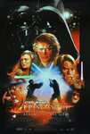
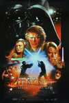

Star Wars: Episodio I - La amenaza fantasma (título original en inglés: Star Wars: Episode I - The Phantom Menace; también conocida en español como La guerra de las galaxias: Episodio I - La amenaza fantasma) es una película de space operanota de 1999, escrita y dirigida por el director de cine estadounidense George Lucas. Es la cuarta entrega de la saga Star Wars y la primera en el orden cronológico de la misma, después de un paréntesis de veintidós años del lanzamiento de Una nueva esperanza.
La trama describe la historia del maestro jedi Qui-Gon Jinn y de su aprendiz Obi-Wan Kenobi, que escoltan y protegen a la Reina Amidala desde su planeta Naboo hasta Coruscant con la esperanza de encontrar una salida pacífica a un conflicto comercial interplanetario a gran escala. También trata del joven Anakin Skywalker antes de convertirse en Jedi, presentado como un esclavo con un potencial de la Fuerza inusualmente fuerte, y debe lidiar con el misterioso regreso de los Sith.

En el año 32 antes de la Batalla de Yavin (es decir, 32 años antes de Una Nueva Esperanza) una disputa entre la Federación de Comercio y la República Galáctica causada por los impuestos sobre las rutas comerciales de los Territorios del Borde Exterior, ha llevado a la Federación de Comercio a imponer un bloqueo comercial al planeta Naboo. Entonces, el Canciller Supremo Valorum nombra en secreto a dos caballeros Jedi: Obi-Wan Kenobi y Qui-Gon Jinn como embajadores a la nave insignia de la Federación de Comercio, la Saak'ak, con el fin de reunirse con el Virrey Nute Gunray y así obligarlo a resolver la disputa. Ignoran, sin embargo, que el virrey está aliado con el malvado Darth Sidious, que en secreto le ordena invadir Naboo y eliminar a los caballeros Jedi en cuanto lleguen. La nave diplomática de la República que transporta a los dos Caballeros Jedi, la Radiante VII, es destruida, pero Qui-Gon y Obi-Wan escapan del atentado y suben como polizones a un carguero de guerra C-9979 en el que logran llegar a la superficie de Naboo.
En la superficie, los Jedi se encuentran con un indígena gungano de nombre Jar Jar Binks. Jar Jar los lleva al pueblo submarino de Otoh Gunga para escapar del ejército de la Federación. Mientras tanto, la Federación de Comercio invade la capital, Theed, y captura a la Reina Amidala. Los Jedi se encuentran con el líder gungano, el Jefe Nass, para pedirles que ayuden al pueblo de Naboo. Nass se niega y los envía hacia la capital de Naboo en un bongo. Los Jedi, acompañados por Jar-Jar, liberan a la Reina y escapan en el navío diplomático de la reina hacia Coruscant para pedir ayuda al Senado Galáctico. En cuanto la nave emerge de la atmósfera del planeta, se encuentran con las naves de combate de la Federación que conforman el Bloqueo Comercial de Naboo. La nave es atacada, al punto en que pierde sus escudos. Un droide llamado R2-D2 heróicamente restaura los escudos, permitiendo a la nave real de Naboo escapar del bloqueo.
Debido al fuerte ataque, la nave es forzada a aterrizar en el planeta desértico de Tatooine. Mientras buscan las partes necesarias para arreglar la nave se hacen amigos de Anakin Skywalker, un esclavo que le pertenece a un toydariano de nombre Watto, un comerciante de chatarra mecánica en la ciudad de Mos Espa. Anakin es talentoso cuando se trata de manejar vehículos y trabajar con maquinaria (construye un droide casi-completo llamado C-3PO). Qui-Gon siente la Fuerza en el niño y cree que él podrá ser el Elegido que cumplirá una vieja profecía y traerá equilibrio a la Fuerza. Anakin, deseoso de ayudar a sus nuevos amigos, en especial a Padmé por quien comienza a sentir un cariño especial, entra en una carrera de vainas y gana la carrera. Qui-Gon orquesta una treta con el ambicioso Watto, por medio de la cual gana la libertad de Anakin y las partes necesarias para la nave. Puesto que le fue imposible ganar así mismo ganar la libertad de Shmi, la madre de Anakin, este se encuentra ante la encrucijada de permanecer en Tatooine con su madre, o perseguir sus sueños de convertirse en Jedi. Por fin, con gran pesar, decide partir, uniendose al grupo que escolta a la Reina Amidala a Coruscant, donde Qui-Gon espera conseguir el permiso del Consejo Jedi para entrenar a Anakin como su padawan. Mientras tanto, Darth Sidious envía a su mortífero aprendiz, Darth Maul a matar a los Jedi y capturar a la Reina. Maul los encuentra justo antes de salir del planeta y entabla pelea con Qui-Gon, quien sube a la nave al último segundo.
En Coruscant, Qui-Gon Jinn informa al Consejo Jedi acerca del atacante misterioso. Gracias a su poder y su conocimiento de las artes Jedi, el Consejo cree que podría indicar el regreso de los Sith, una antigua orden religiosa que sigue al lado oscuro de la Fuerza. Qui-Gon también le cuenta al Consejo sobre Anakin, con esperanzas de que pueda ser entrenado como un Jedi. Despues de examinar al chico, el Consejo lo rechaza, diciendo que es demasiado grande para entrenamiento según el Código Jedi. Tambien se preocupan al percibir mucho miedo y pena, causados por la separación de su madre, en el chico, lo que podría llevarlo al lado oscuro. Mientras tanto, el Senador Palpatine toma ventaja de la situacion de la Reina y la convence de promover una moción de censura contra el Canciller Valorum. El resultado de las votaciones deriva en la elección de Palpatine como el nuevo Canciller Supremo. La Reina se frustra con la incompetencia del Senado Galáctico y vuelve a Naboo, escoltada de nuevo por Qui-Gon Jinn y Obi-Wan Kenobi, quienes por instrucciones del Consejo Jedi, buscan la oportunidad de desenmascarar al atacante de la reina.
Una vez en Naboo, la Reina forma una alianza con los gunganos y, uniendo fuerzas, se enfrentan a la Federación de Comercio. En este punto la historia se divide en tres partes: Batalla espacial de Naboo, la pelea en el palacio y la Batalla de Naboo. Los gungans se enfrascan en una batalla desesperada contra el ejército droide, pero la derrota parece inevitable. En el espacio, Anakin Skywalker destruye por accidente la Nave de Control de Droides de la Federación, desactivando todos los droides en el planeta. En el Palacio Real de Theed, la Reina y su pequeño grupo de soldados pelean hasta encontrarse con el mismo Nute Gunray. En el camino hacia allá, Darth Maul combate contra Obi-Wan y Qui-Gon en un duelo mortal. Separados por escudos, Obi-Wan mira desesperadamente cómo Maul mata a su maestro. Enfurecido por la muerte de su mentor y amigo, Obi-Wan entra y combate ferozmente al Sith, pero este lo impulsa hacia un pozo de fundición. Obi-Wan consigue sujetarse a uno de los bordes del pozo, mientras Darth Maul patea al fondo del pozo su espada láser, y alza sobre la cabeza de Obi-Wan su espada, preparándose para asestar el golpe mortal. Es entonces cuando Obi-Wan, ayudado por la Fuerza, salta sobre el borde del pozo, atrae hacia su mano el sable láser de su maestro, y corta a Darth Maul en la mitad, haciendo que caiga al fondo del abismo que yace a sus espaldas. En sus últimos momentos, Qui-Gon le ruega a su aprendiz que entrene a Anakin, pase lo que pase. Obi-Wan, herido por el dolor de ver a su maestro y amigo morir en sus brazos, le promete que él entrenará al joven Anakin. Después de la batalla, el Consejo nombra a Obi-Wan Caballero Jedi y Qui-Gon es honrado en silencio en una pira ceremonial fúnebre. Kenobi habla con el Gran Maestro Jedi Yoda de su decisión de tomar a Anakin como su aprendiz padawan, aún si para ello debe desafiar al Consejo Jedi, a lo que el maestro Yoda le dice que el Consejo lo ha aprobado ya, pero que él no lo aprueba del todo. Mientras se honra a Qui-Gon, Mace Windu y Yoda acuerdan que su muerte fue causada por un Sith. Siendo que solo puede haber dos Sith al mismo tiempo, un Maestro y un Aprendiz, ambos concuerdan en que aún vive un Sith, pero ignoran cuál de los dos sea. La película termina con una enorme celebración entre los ciudadanos de Naboo y los gungans. La Reina le presenta al Jefe Nass con un regalo de gratitud y amistad.